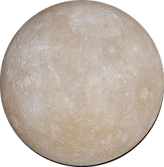
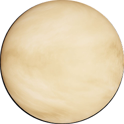
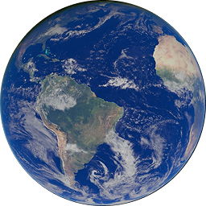
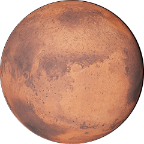
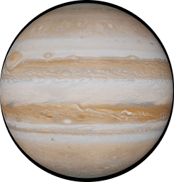
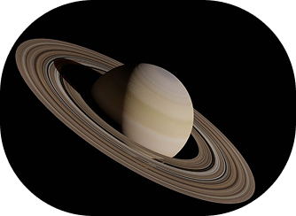
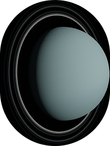
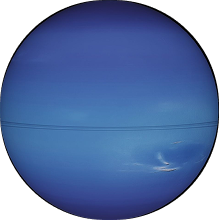

O Sistema Solar é formado pelo Sol e por todos os corpos celestes que permanecem sob sua influência
gravitacional. Localizado na Via Láctea, ele abriga oito planetas, planetas anões, luas, asteroides, cometas
e diversos outros objetos.
O Sol é a estrela central desse sistema e sua gravidade mantém os planetas e outros corpos em órbita. Os
oito planetas são divididos em dois grupos: os rochosos, que são Mercúrio, Vênus, Terra e Marte, e os
gigantes, formados por Júpiter, Saturno, Urano e Netuno.
Cada planeta possui características próprias, como tamanho, composição, temperatura e atmosfera, tornando o
Sistema Solar um conjunto muito diverso e fascinante.

Mercúrio é o menor planeta do Sistema Solar e também o mais próximo do Sol. Sua superfície rochosa é marcada por inúmeras crateras. Por não possuir uma atmosfera significativa, apresenta grandes variações de temperatura entre o dia e a noite.

Vênus é o segundo planeta a partir do Sol e possui uma atmosfera muito densa, composta principalmente por dióxido de carbono. Seu intenso efeito estufa faz dele o planeta mais quente do Sistema Solar, mesmo não sendo o mais próximo do Sol.

A Terra é o terceiro planeta a partir do Sol e, até onde sabemos, o único lugar do Universo que abriga vida. Possui água em estado líquido na superfície, uma atmosfera que protege e regula sua temperatura e condições favoráveis à existência de diferentes formas de vida.

Marte é o quarto planeta a partir do Sol e recebe esse apelido por causa da presença de óxido de ferro em seu solo, que lhe dá uma aparência avermelhada. Cientistas estudam o planeta para compreender sua história e investigar se ele já teve condições favoráveis à existência de vida.

Júpiter é o maior planeta do Sistema Solar. É um gigante gasoso, composto principalmente por hidrogênio e hélio, e apresenta faixas de nuvens e grandes tempestades em sua atmosfera. Uma de suas características mais conhecidas é a Grande Mancha Vermelha, uma tempestade gigantesca.

Saturno é o segundo maior planeta do Sistema Solar e é famoso por seu impressionante sistema de anéis, formado principalmente por partículas de gelo, poeira e fragmentos rochosos. Assim como Júpiter, é um gigante gasoso e possui diversas luas.

Urano é um gigante de gelo que possui uma coloração azul-esverdeada devido à presença de metano em sua atmosfera. Uma de suas características mais curiosas é sua grande inclinação de rotação, fazendo com que pareça girar de lado em relação ao seu movimento ao redor do Sol.

Netuno é o oitavo e mais distante planeta do Sol. Também é um gigante de gelo, apresenta uma atmosfera bastante dinâmica e possui ventos extremamente intensos. Sua coloração azul está relacionada à composição de sua atmosfera.